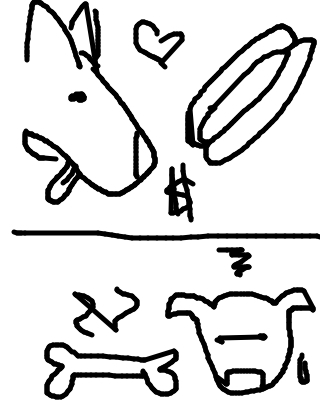

so jackcheng drew...

so irondavy wrote...
A wiener dog is reminded of hot dogs by a bone
so rickyc drew...
so mike wrote...
The dog wants a hot dog but due to the recession could only afford a stupid bone.
so matt drew...
so tasia wrote...
Well of course Spike was upset... It was his hotdog, after all.